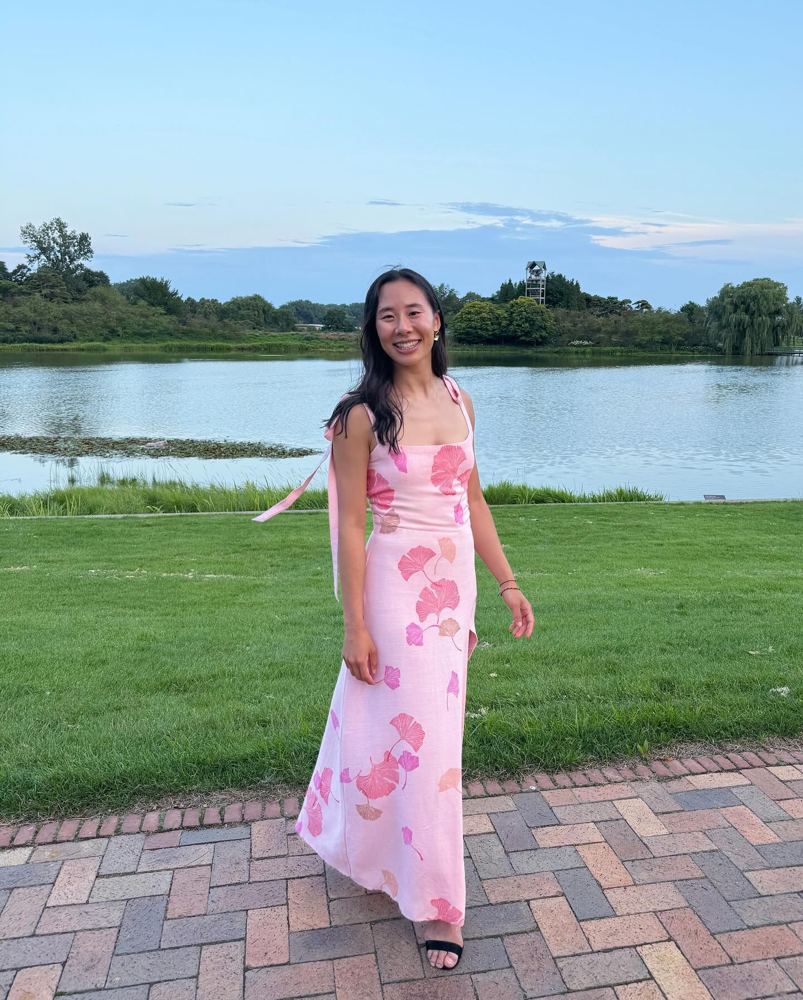

Sewing Dresses
Clothing
I purchased a pattern for my first project since the only wearable I had created prior to this was my middle school pajama pants. I bought a Criss-Cross Halter Jumpsuit pattern (V9259) from Vogue and followed the instructions for what should have been my size pattern. For this piece, I used Jacquard fabric paint to make thick stripes in a fun, spring color palette. I quickly discovered that my proportions don't quite match Vogue's sizing chart, so I learned how to adjust a pattern to reduce gaping and make a better fit! This project taught me basic construction techniques, how to add pockets (very important for women's clothing!) and gave me the confidence that I could probably turn the ideas in my head into wearabble clothing.
My first custom dress! I wanted something yellow, something structural / Kimono-inspired (which I think suits me best), and something that would move as I walked (for that fun flow). Oh, also a bow because I love how bows give a nice feminine touch. I wanted the flaps at the front to move, and I wanted them to be connected to the bow in the back to form one continous line. I accidentally cut the dress too short and I didn't do the best job sewing satin (there's a lot of bunching), but that's a lesson for next time.


I'm big into reducing, reusing and upcycling, and I wanted to make my biggest dress as sustainably as possible. I only used discarded fabric at fabric stores (which was more cost-effective too), reused buttons and leftover paint from an old project. I got lucky in finding a couple yards of a brown-ish orange fabric and decided to paint a tree / topography map pattern (to really lean into the sustainability theme). I learned ruching techniques for the back and added two large pockets to make up for the fact that I don't have a purse. Love how this one turned out!


The title says it all - the second wedding was "vintage garden party"-themed, and I interpreted that to mean (vintage?) Matisse flowers. By this time I felt like a pattern-making veteren. I drew an idea, cut out test pieces, made sure they fit me, made necessary adjustments, and then created the dress out of a flowy linen-blend fabric! I then realized the dress photographed white, which is a no-no for weddings, so I threw the whole thing in a Rit Rose Quartz dye bath and now it's pink! This whole project took just a weekend and I really love how the open back (and the bow!) turned out.


I created a gold dress for the 1920's themed company holiday party. I wanted some sassy cutouts while still keeping the dress classy and company event-appropriate, so we've got a small peek of ab and and healthy peek of back :D Complete with a matching gold bowtie for Shep!!


I used mesh and spandex to make a custom figure skating dress for my program to Muse's Madness. I designed an A-Line mesh skirt with side slits for light flowy-ness and a slight see-through-ness. I also used mesh for the body and overlayed some groovy spandex lines that form a continuous line from front to back. To finish it off and give it a bit of class (and also have someplace to put a clasp), I added a spandex mockneck. Ooh, and also some bedazzling with Swarovski crystals. Really happy with how this turned out!

My wonderful friend Grace asked me to be one of her bridesmaids in summer of 2024. She requested light pink dresses with an optional floral print, of which I unfortunately had none. So, I made a long Reformation-inspired dress (with a slit for dancing!) and stamped a ginkgo leaves pattern thanks to my newly developed linoleum carving hobby.
